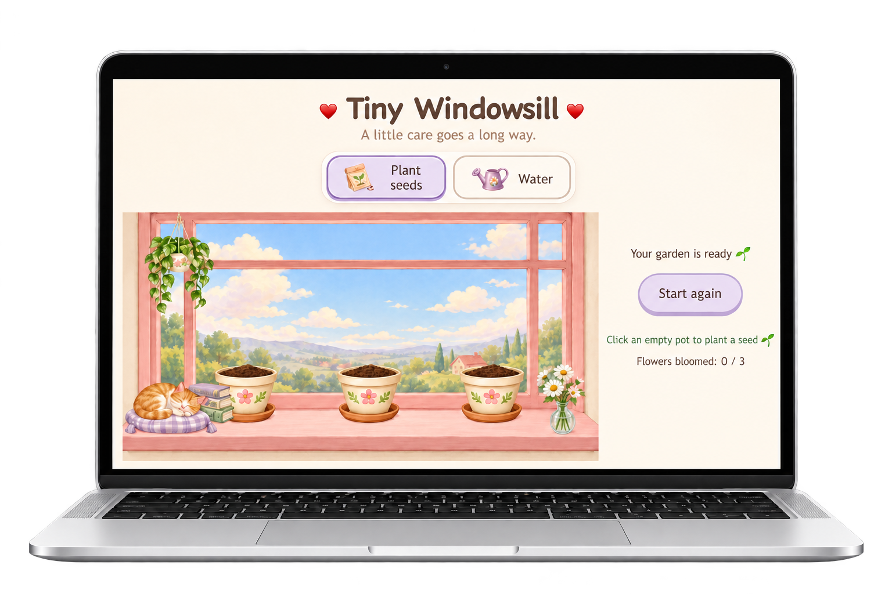

Tiny Windowsill
Plant seeds and grow three little flowers.
Behind the game
A browser gardening game where you plant seeds, choose a watering can and grow three flowers. Each plant grows independently, and your garden is saved between visits.
JavaScript I practised
- Arrays and objects: storing each plant’s watering count and planting status.
- Event listeners: responding to tool selection, watering and resetting.
- Conditions and DOM updates: changing growth stages, instructions and button states.
- filter(): counting how many flowers have bloomed.
- localStorage and JSON: saving and restoring the garden.
- setTimeout(): controlling the watering animation.
Key functions
selectTool()
renderGarden()
saveGarden()
loadGarden()
showWatering()